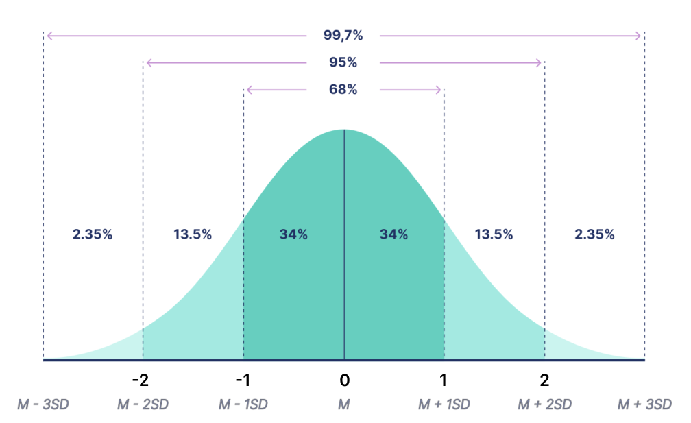
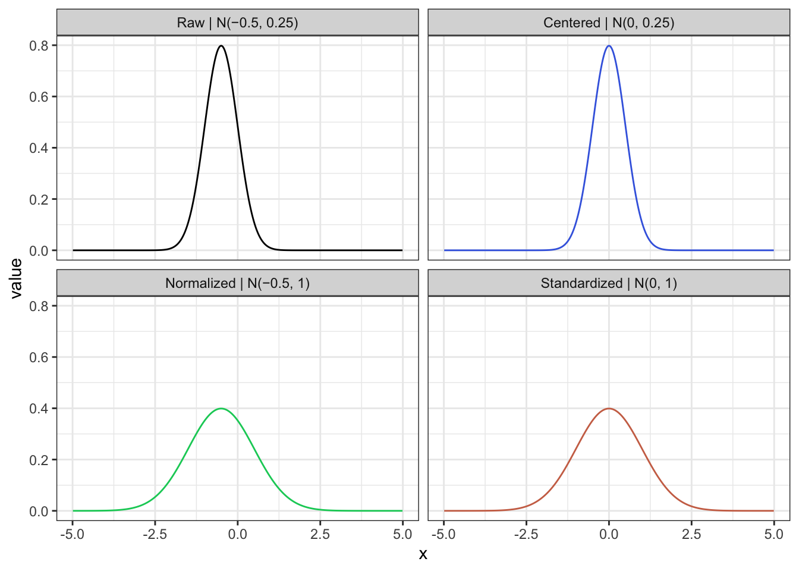

7 Нормальное распределение и стандартизация
7.1 Нормальное распределение и его свойства
Мы уже обсуждали нормальное распределение, когда говорили про распределения в целом [# Распределения]. Это вероятностный закон, где заданным значениям признака приводится в соответствие вероятность встретить признак с таким значением, выраженный по формуле \(P(x) = \frac{1}{\sigma\sqrt{2\pi}} * e^{-\frac{(x - \mu)^2}{2(\sigma)^2}}\)
Если внимательно посмотреть на формулу нормального распределения, можно обратить внимание, что почти все в ней является константами, кроме переменной \(x\) и двух неизвестных параметров: \(\mu\) и \(\sigma\). Это уже знакомые наши друзья: среднее генеральной совокупности (математическое ожидание и стандартное отклонение генеральной совокупности. Таким образом, чтобы построить распределение для любого признака, который в генеральной совокупности распределен нормально, нам необходимо знать только два параметра распределения:
- среднее
- стандартное отклонение
Помимо, собственно, формулы, часто можно увидеть такую запись, обозначающую нормальное распределение: \(\sim \mathcal{N}(\mu, \, \sigma^2)\)
На рисунке видно, что среднее отвечает за положение цента распределения, а стандартное отклонение – за его “растянутость” вдоль оси \(х\), ширину колокола.
 Изображение из википедии
Изображение из википедии
Почему такое внимание мы уделяем именно нормальному распределению?
- Нормальное распределение интересно нам как минимум потому, что большинство признаковв, которые мы исследуем, являются случайными величинами, на которые действует большое количество случайныз факторов – а значит, согласно центальной предельной теореме, распределены номрально. Как следствие, физические, биологические и психологические признаки (рост, вес, выраженность черт личности) обычно распределены нормально: средние признаки встречаются в природе чаще, чем более радикальные
- Нормальное распределение симметично и унимодально, и в некоторых операциях с ним попроще работать.
- Для того, чтобы оценить вероятность встетить человека определенного роста, нам нужно знать (или оценить) только среднее и стандартное отклонение генеральной совокупности – и далее мы вычислим эту вероятность по формуле нормального распределения.
Нормальное распределение обладает рядом свойств:
- симметрично
- унимодально (только одна мода)
- отклонения от среднего подчинаются вероятностному закону: знаем, сколько процентов данных содержится в скольких стандартных отклонения от среднего

Последнее свойство дает нам очень большие возможности при работе с нормальным распределением: например, имея репрезентативную выборку замеров роста, мы можем посчитать, с какой вероятностью, например, встетим женщину с ростом 158 см. Вспоминаем визуализацию из первых семинаров https://ourworldindata.org/human-height

Чтобы посчитать эту вероятность, нам, по сути, нужно в формулу нормального распределения в качестве \(x\) вставить \(x=158\), а в качестве \(\mu\) и \(\sigma\) использовать выборочные средние и стандартные отклонения.
Некоторые значения процентов из этого распределения нужно запомнить, так как они будут встечаться часто – это значения для количества данных, лежащих внутри одного или нескольких стандартных отклонений от среднего.
“Правило трех сигм”:
- в пределах одного стандартного отклонения от среднего значения (\(\bar x ± \sigma\)) лежит 68% значений — это очень частые значения;
- в пределах двух стандартных отклонений от среднего значения (\(\bar x ± 2\sigma\)) лежит 95% значений — бо́льшая часть выборки;
- в пределах трех стандартных отклонений от среднего значения (\(\bar x ± 3\sigma\)) лежит практически 100% выборки — то есть вся выборка.
7.2 Стандартное нормальное распределение (z-распределение)
Что делать, если нам нужно оценить, какая вероятность больше: встретить женщину ростом 158 см или мужчину ростом 174 см? Как видим из вузаилизации выше, эти распределения немного отличаются, и мы не можем расположить эти значения на одном. Здесь на помощь нам приходит стандартное нормальное распределение или z-распределение
Стандартное нормальное распределение – это нормальное распределение c центром в нуле (\(\mu=0\)) и стандартным отклонением равным 1 (\(\sigma=1\)).

Это распределение универсально и безразмерно: на шкале у нас уже не \(\sigma\), а цифры, не имеющие размерности. Эта шкала назвается z-шкалой, а само распределение так же называется z-распределением. Любое нормальное распределение можно привести к виду стандартного нормального – это процедура называется z-преобразованием
7.3 Z-преобразование и стандартизация
Стандартизация – это процесс преобразования нормального распределения к стандартной безразмерной Z-шкале со средним 0 и стандартным отклонением 1.
Чтобы провести стандартизацию, нужно сделать две вещи:
- центрировать распределение — если оно было смещено от нуля (например, \(\mu=15\)), то нам нужно вернуть его в центр \(\mu=0\)
- нормировать распределение — избавиться от разницы в отклонениях \(\sigma\), привести наше распределени к распределению с \(\sigma=1\)
Учитывая две эти операции, формула z-преобразования выглядит следующим образом:
\(Z_x = \frac{x - \mu}{\sigma}\)
Z-оценку можно расположить на Z-распределении и посмотреть, какой процент данных лежит левее Z-оценки, то есть менее вероятен. Высчитать этот процент можно по формуле нормального распределения, подставив \(\mu=0\) и \(\sigma=1\), но проще воспользоваться таблицами Z-оценок (они легко гуглятся), например https://www.z-table.com/
Стандартизация не меняет характер распределения, менят только положения его центра и “расплющенность” вдоль оси ч– то есть буквально то, что мы знаем по свойствам среднего и дисперсии

Можно интерпретировать Z-шкалу как шкалу типичности или частотности встечаемости значний: все, что лежит в +- 1 – встечается очень часто, и чем дальше от цента – тем более редкие значения нам попадаются.
Таким образм, Z-преобразование используется чтобы:
- Узнать, насколько типично (частотно) встреченное нами значение
- Сравнить вероятности встретить значения из двух разных выборок (нормально распределенных)
Например, мы (откуда-то) знаем, что средний рост женщин 165 см со стандартным отклонением 7, а средний рост мужчин – 178 и станд откл 8.
Возвращаясь к нашему вопросу:
\(Ж_{158}\): \(Z_{158} = \frac{x - \mu_ж}{\sigma_ж} = \frac{158 - 165}{7} = -1\)
\(М_{174}\): \(Z_{174} = \frac{x - \mu_м}{\sigma_м} = \frac{174- 178}{8} = -0.5\)
Мы перевели рост мужчин и женщи в Z-оценки и теперь можем расположить их на Z-распределнии. Уже видно, что число -1 располагается левее, чем число -0.5, значит, вероятность встретить женщину с ростом 158 см меньше, чем мужчину с ростом 174 см. Чтобы оценить эту вероятность точно, нам придется воспользоваться таблицами Z-оценок https://www.z-table.com/
\(Z_{ж_158} = -1\), что соответствует примерно 16% вероятности \(Z_{м_174} = -0.5\), что соответствует примерно 30% вероятности
Таким образом, вероятность встретить женщину с ростом 158 см составляет 16%, и это на 14% меньше, чем вероятность встретить мужчину ростом 174 см.